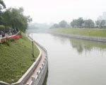

August 10, 2003
看到了北京的蓝天！
 下午三点睡起，去玉渊潭散步，看到了北京的蓝天。
下午三点睡起，去玉渊潭散步，看到了北京的蓝天。
终于病了。
前面连续三个星期的加班，一直担心自己会累倒，最终还是病了，但还没倒。因为不是什么大病，牙疼！连续吃了两天消炎药，效果也不很明显，但左腮却明显地胖了起来。其实，胖嘟嘟的，也蛮可爱的，让我想起童年的照片。遗憾的是，只有半边脸胖，有点幽默！
另外，还有一点遗憾。上下两边的牙齿只能张开一指宽，结果不能啃桃等水果了，吃饭只能跟女孩子一样一点点往里塞，让我也体会了一下淑女的感觉。：）
我不敢再加班了，就老老实实地闲了一把。中午，还睡了个午觉。下午起来，散步时只觉得阳光晒得厉害，一抬头竟看到了蓝天。
一向只觉得北京天是灰的，一年回季如此，白天黑夜都如此。以致于，我某一年春节回家，看到天河里的群星，都觉得耀眼。
坐在昆玉河边的柳阴里，有轻风从西南吹来，感觉不到热。对面的八一湖里，人声喧闹，有胆大者从滑道里冲下，竟能在水上��几米远。水边有老者钓鱼，一甩杆就钓起一条2寸有余的小鱼，让人觉得希奇。不曾想，接下来连接几次甩杆，都被鱼偷吃了。
心中不觉开朗起来了。
Comments
惭愧得很，至今也没有雄心壮志，所以习惯了做一个忙忙碌碌的小人物。
非常感激gongzuozheng朋友的一番美意！
大哥想干一番事业否？俺愿意做你的助手~~~~
Posted by: gongzuozheng at September 12, 2003 02:00 PMPost a comment